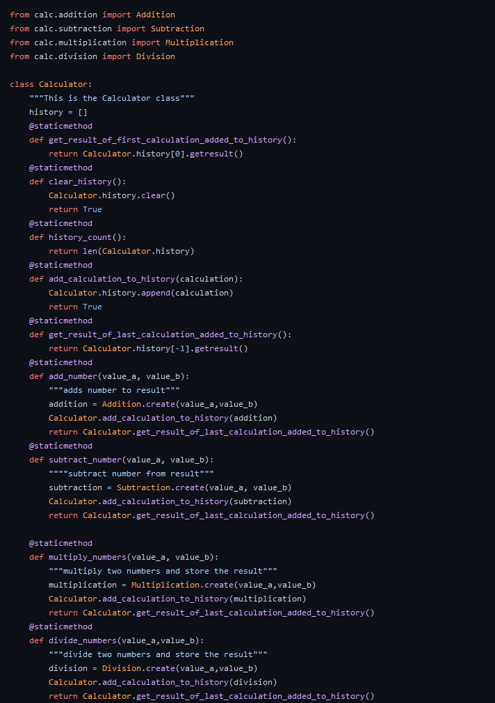

Design Patterns Used in the Calculator Program
Design patterns in Python to put simply are just a set of rules/patterns that developers employ to make sure that code is easily readable for another person that is viewing it. Python works so well with design patterns since it is entirely object-orientated (everything in Python is an object) this makes it very easy to implement patterns. In addition to these unwritten rules there are code guidelines such as PEP-8 that bring structure to code.
A key design pattern that the calculator program employs is the factory pattern. This allows you to have a blueprint for the objects without having a concrete class to attach them to. This makes the program that you are writing be that much more organized and less cluttered.

One of the key elements of having a clean program that is as efficient and streamlined as possible is to cut out if-statements. Looking through the calculator program you will not find any if-statements.
